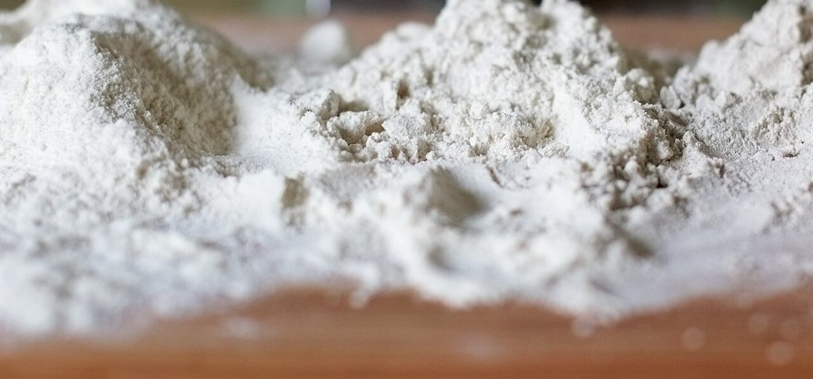

ほめ言葉の通知表
カフェ / 鹿児島県指宿市
yokatoko cafe
鹿児島県指宿市にあるカフェ「yokatoko cafe」のご案内ページです。営業時間やメニューは準備中。確認できているのは所在地とInstagramのアカウントだけなので、ほかの欄は空けてあります。
この通知表について
ほめ言葉を、ひとことずつ。
通知表は、がんばったことに印をつけて渡すもの。このページでは点数や評価はつけず、写真に写っているものへ「ほめ言葉」をひとことずつ添えています。ほめているのは写真のものだけで、お店の提供内容を示すものではありません。
このテーマは、屋号と業種から制作側が連想したものです。制作側の連想で、お店の理念・由来とは無関係です。
ほめ言葉の欄
写真への、ひとこと5つ。

写真はイメージです ほめ言葉 1
つやつや
ぐるりと巻いた焼き色に。

写真はイメージです ほめ言葉 2
さらさら
ひと山に盛った粉に。

写真はイメージです ほめ言葉 3
ふっくら
布の下でふくらんだ丸い生地に。

写真はイメージです ほめ言葉 4
こんがり
格子状の割れ目に残った粉と焼き色に。

写真はイメージです ほめ言葉 5
つぶぞろい
天板にぎっしり並んだ丸いパンに。
写真はお店のものではなく、国外または撮影地不明のフリー素材のイメージです。